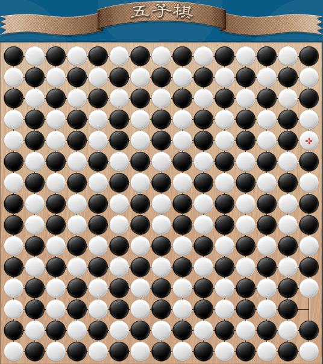
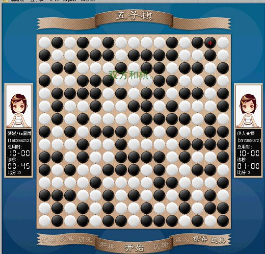

求“五子棋图形”
#1 求“五子棋图形”作者：yidefei 发表时间：2008-1-27 19:03:34
要求：
1.图形美观
2.有一定意义
记得有一次QQ看过人摆出一个心型，真是太厉害了，可惜当时没有抓屏下来 。
#2 Re:求“五子棋图形”作者：有志青年 发表时间：2008-1-28 12:25:49
#3 Re:求“五子棋图形”作者：yidefei 发表时间：2008-1-29 16:29:23
这算一个，要了。谢谢#4 Re:求“五子棋图形”作者：逆刃 发表时间：2008-1-31 14:16:43

是这个吗？
#5 Re:求“五子棋图形”作者：五子天下 发表时间：2008-2-13 16:26:23
可惜我不会摆#6 Re:求“五子棋图形”作者：有志青年 发表时间：2008-2-22 16:35:36
#7 Re:求“五子棋图形”作者：广西柳州燕 发表时间：2008-2-22 17:39:22
我多的是捏,这里没有可以从电脑上传的呀,那偶就不会发了
#8 Re:求“五子棋图形”作者：有志青年 发表时间：2008-2-22 17:41:36
回复的时候有个上传附件呀，可以选择图片，你试试看#9 Re:求“五子棋图形”作者：yidefei 发表时间：2008-2-22 18:54:34
可只是把棋盘摆满了呀，我是没有看出什么东东来
#10 Re:求“五子棋图形”作者：又怎奈何 发表时间：2008-3-18 22:28:24
 下了两小时
下了两小时#11 Re:求“五子棋图形”作者：逆刃 发表时间：2008-3-18 22:30:33
楼上图片挂掉了啊。#12 Re:求“五子棋图形”作者：又怎奈何 发表时间：2008-3-18 22:31:42
应该是这个吧 我QQ745872766
我QQ745872766
#13 Re:求“五子棋图形”作者：又怎奈何 发表时间：2008-3-18 22:33:38
什么就是 重新发了#14 Re:求“五子棋图形”作者：逆刃 发表时间：2008-3-18 22:45:46
你发的图片链接自QQ空间。QQ空间的图片不允许外链。所以不行。#15 Re:求“五子棋图形”作者：又怎奈何 发表时间：2008-3-29 21:37:52
 这样可以了吧
这样可以了吧
#16 Re:求“五子棋图形”作者：有志青年 发表时间：2008-3-29 21:47:47
还是不行，回复的时候，点击回复按钮，然后在发帖的窗口下方有个上传，可以上传图片